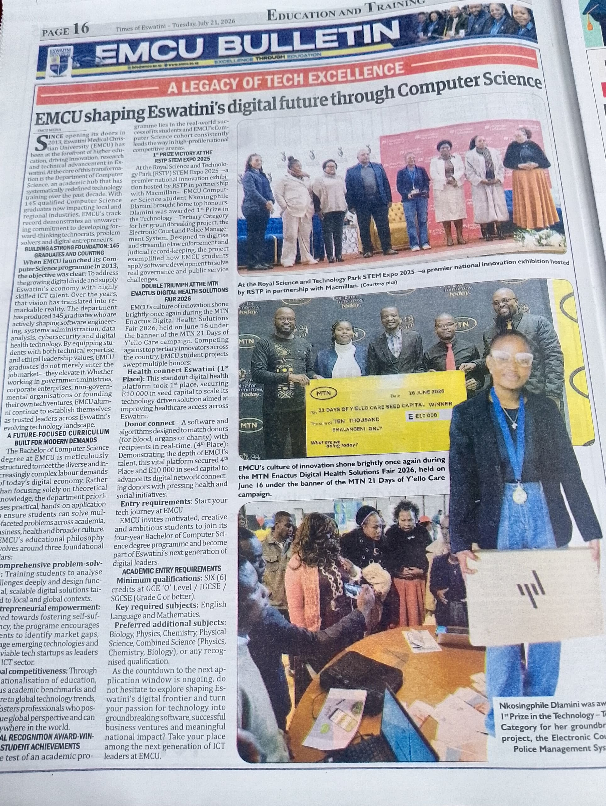
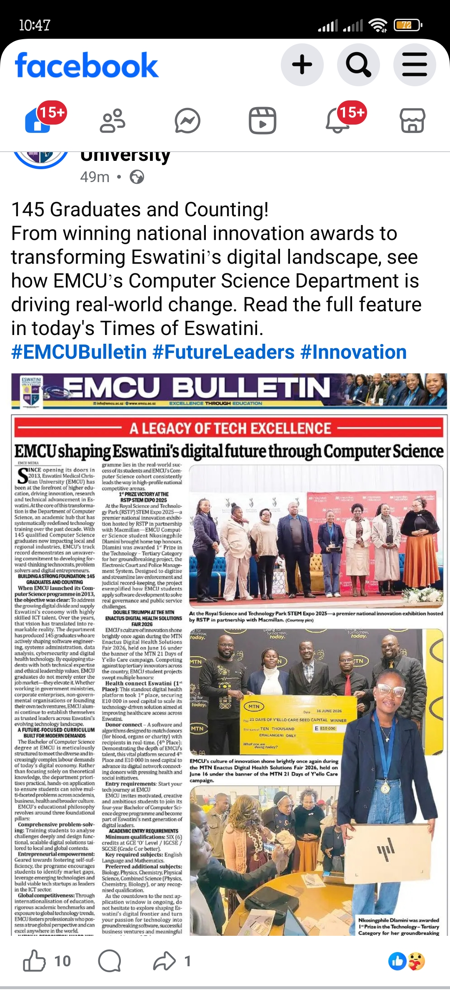

In the Press
Featured in Times of Eswatini
Recognised in the national press for winning 1st Prize at the RSTP STEM Expo 2025. The EMCU Bulletin feature highlighted the Electronic Court and Police Management System and the Computer Science department’s role in shaping Eswatini’s digital future.
The article covered the STEM Expo victory under the Technology — Tertiary category and showcased how EMCU students apply software development to real governance and public-service challenges.

